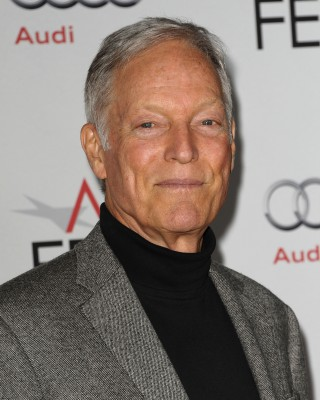
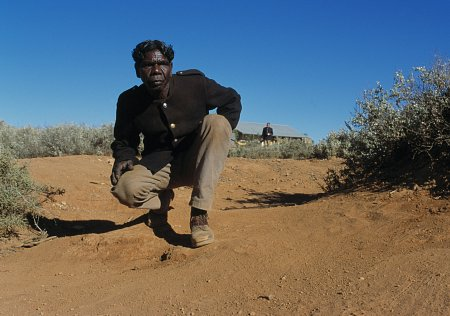

#7304 Die Letzte Flut
Alternativ: The Last Wave

 IMDB-Wertung: 7.2 / 10
IMDB-Wertung: 7.2 / 10  Metascore: 0
Metascore: 0 
Der Rechtsanwalt David Burton soll im australischen Sydney die vorgeblichen Mörder eines Aborigines verteidigen. Als er sich mit dem Fall näher befasst, wird er von unheimlichen Träumen heimgesucht, in denen auch immer wieder ein mysteriöser Eingeborener auftaucht und seltsame Kultsteine der Eingeborenen. Von seinem Vater erfährt Burton, dass er das „zweite Gesicht“ besitzt, eine Gabe die Zukunft zu sehen. Und dann lernt Burton den Mann aus seinen Träumen kennen, den Eingeborenen Chris Lee, der ihn in den Abwasserkanälen zu den Kultstätten seiner Vorfahren führt, wo es einen in Stein gemeißelten Kalender gibt. Schon vor 50.000 Jahren gab es Eingeborene, die ebenfalls die Zukunft sehen konnten und die, wie Burton, eine Katastrophe für Sydney vorhergesehen haben. Als Burton in Panik aus der Kultstätte nach draußen flieht, rast auch schon eine riesige Wasserwand auf Sydney zu.
Jahr: 1977
Dauer: 105 Minuten
FSK:
Land: Australien Studio: Kinowelt Home EntertainmentTonspuren:
Untertitel: Deutsch,
Auflösung: 1080p (1920x1080) Größe: 7260 MB
Genre: Thriller, Drama, Fantasy, Mystery
Regisseur:  Peter Weir
Peter Weir
Drehbuch: Peter Weir
Soundtrack:
Darsteller:
-  Richard Chamberlain als David Burton
-  David Gulpilil als Chris Lee
- Hedley Cullen als Judge
- Olivia Hamnett als Annie Burton
- Frederick Parslow als Rev. Burton
- Vivean Gray als Dr. Whitburn
- Nandjiwarra Amagula als Charlie
- Walter Amagula als Gerry Lee
- Roy Bara als Larry
- Cedrick Lalara als Lindsey
- Morris Lalara als Jacko
- Peter Carroll als Michael Zeadler
- Athol Compton als Billy Corman
- Michael Duffield als Andrew Potter
- Wallas Eaton als Morgue Doctor
- Jo England als Babysitter
- John Frawley als Policeman
- Jennifer De Greenlaw als Zeadler's Secretary
- Richard Henderson als Prosecutor
- Penny Leach als Schoolteacher
- Merv Lillie als Publican
- John Meagher als Morgue Clerk
- Guido Rametta als Guido
- Malcolm Robertson als Don Fishburn
- Greg Rowe als Carl
- Katrina Sedgwick als Sophie Burton
- Ingrid Weir als Grace Burton
Datei: X:\1977\Letzte Flut, Die (1977, FSK, 1920x1080).mkv seit 16.10.2017
Festplatte: HD 1971-1979
 Es gibt insgesamt 33 Filme in der Gruppe '1977'
Es gibt insgesamt 33 Filme in der Gruppe '1977'